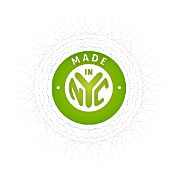

Activecell is proud to be a New York technology company. Activecell World HQ are located in sunny Soho, and we invite you to drop by any time!
We are very lucky to call New York our home.
 Right now New York is undergoing a massive expansion of its tech sector, and large companies and startups alike are flocking to the city to be a part of the renaissance.
Mayor Bloomberg and Governor Cuomo are working very hard to create a fantastic environment for companies like ours, and I doff my cap to their efforts, because we have taken advantage of my of the programs and tax credits they have made available. But we also enjoy the less tangible benefits of being in such an exciting city. And of course I am talking about food trucks.